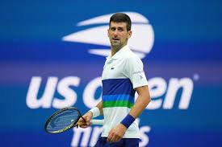
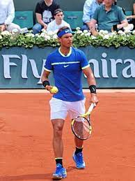
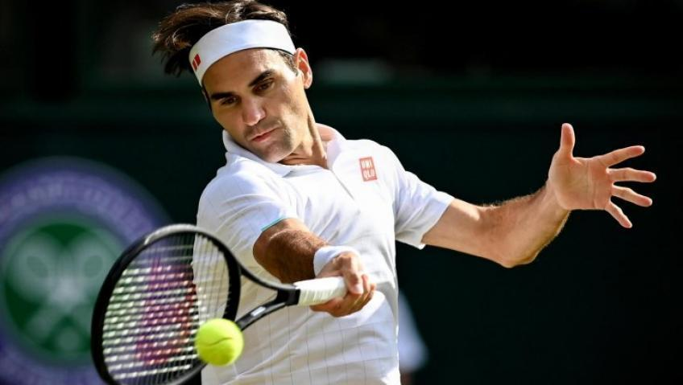
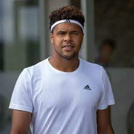
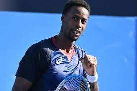

Quelques joueurs célébres
Sur cette page vous trouverez des informations sur quelque joueurs des plus célébresd dans ce sport
Novak Djokovic :
Novak Djokovic (en alphabet cyrillique serbe : Новак Ђоковић, prononcé /ˈnɔ.vaːk ˈd͡ʑɔː.kɔ.vit͡ɕ/ ; en alphabet latin serbe : Novak Đoković ÉcouterN 1, né le 22 mai 1987 à Belgrade (Yougoslavie, actuelle Serbie), est un joueur de tennis serbe, professionnel depuis 2003.
Considéré, avec Roger Federer et Rafael Nadal, comme l'un des meilleurs joueurs de tennis de tous les temps, Novak Djokovic a remporté 86 titres en simple sur le circuit ATP, dont 20 tournois du Grand Chelem, un record qu'il partage avec Federer et Nadal, cinq Masters et 37 Masters 1000, détenant ainsi le record de titres dans cette catégorie. En 2021, en s'imposant pour une seconde fois à Roland-Garros, il devient le premier joueur de l'ère Open et le troisième athlète masculin de l'histoire, après Roy Emerson et Rod Laver, à détenir au moins deux titres dans chaque levée du Grand Chelem. En 2018, il remporte le Masters de Cincinnati, devenant ainsi le seul joueur de l'histoire du tennis à avoir remporté les 9 tournois de cette catégorie en simple7. Deux ans plus tard, il réédite sa victoire au Masters de Cincinnati — délocalisé à New York pour cause de pandémie de Covid-19 — et devient le premier et unique joueur de l'histoire à avoir réalisé le Master d'or à deux reprises, ayant remporté au moins deux fois chacun des neuf Masters 1000. En 2021, il s'adjuge l'Open d'Australie pour la neuvième fois, ce qui fait de lui l'unique recordman de titres dans ce tournoi majeur. Il remporte la médaille de bronze aux Jeux olympiques en 2008, la Coupe Davis avec l'équipe de Serbie en 2010 et la première édition de l'ATP Cup avec la Serbie en 2020. Vainqueur de tous les tournois du Grand Chelem et de tous les Masters 1000 au moins deux fois ainsi que du Masters, Djokovic possède le palmarès le plus complet de l'ère Open. Seule la médaille d'or olympique manque encore à son palmarès.
Il atteint la première place mondiale pour la première fois le 4 juillet 2011, et termine numéro 1 à sept reprises au terme des saisons 2011, 2012, 2014, 2015, 2018, 2020 et 2021, record historique. Il a, à ce jour, passé 345 semaines à la tête du classement mondial, ce qui est le record historique du nombre de semaines passées en tant que numéro 1 mondial, qu'il possède depuis le 8 mars 2021, devant Roger Federer (310). Il possède également le record du nombre de points ATP atteint par un joueur en simple, avec 16 950 points le 6 juin 2016, au lendemain de son sacre à Roland-Garros, mais aussi le record de points en fin d’année en 2015 avec 16 585 points.

Rafael Nadal
Rafael Nadal Parera, simplement dit Rafael Nadal, est un joueur de tennis espagnol, professionnel depuis 2001, né le 3 juin 1986 à Manacor, sur l'île de Majorque, dans l'archipel des Baléares.
Il est considéré par tous les spécialistes comme le meilleur joueur sur terre battue de l'histoire du tennis1,2,3, établissant en effet des records majeurs, et par la plupart d'entre eux comme l'un des meilleurs joueurs de simple de tous les temps, si ce n’est le meilleur4,5,6,7. Il a remporté vingt tournois du Grand Chelem (un record qu'il détient avec Roger Federer et Novak Djokovic) et est le seul joueur à avoir remporté treize titres en simple dans un de ces quatre tournois majeurs : à Roland-Garros où il s'est imposé de 2005 à 2008, de 2010 à 2014, puis de 2017 à 2020. À l'issue de l'édition 2021, où il est détrôné en demi-finale par Novak Djokovic, il présente un bilan record de cent-cinq victoires pour trois défaites dans ce tournoi parisien, et ne compte aucune défaite en finale. Il a remporté également le tournoi de Wimbledon en 2008 et 2010, l'Open d'Australie 2009 et l'US Open 2010, 2013, 2017 et 2019. Il est ainsi le septième joueur de l'histoire du tennis à réaliser le « Grand Chelem en carrière » en simple. À ce titre, Rafael Nadal est le troisième joueur et le plus jeune à s'être imposé durant l'ère Open dans les quatre tournois majeurs sur quatre surfaces différentes, performance que seuls Roger Federer, Andre Agassi et Novak Djokovic ont accomplie.
En devenant champion olympique en 2008, il est aussi le deuxième à avoir réalisé le Grand Chelem doré en carrière après Agassi. Il est aussi l’un des deux seuls joueurs de l'histoire, avec Novak Djokovic (2021), à avoir gagné 3 titres du Grand Chelem sur trois types de surfaces différentes la même année (gazon, terre battue, dur), en 2010, réalisant ainsi le Petit Chelem. En outre, il est le seul joueur de l'histoire à avoir gagné au moins un titre du Grand Chelem chaque année pendant dix saisons consécutives (2005-2014). Avec trente-six victoires en finale d'un Masters 1000, il est le joueur le plus titré dans cette catégorie, à égalité avec Novak Djokovic (pour une finale de moins) et est le seul à en avoir remporté onze dans un même tournoi (Monte-Carlo 2005 à 2012, 2016 à 2018). Il est également le joueur ayant remporté le plus de matchs face à un numéro un mondial depuis sa victoire face à Novak Djokovic à Rome en 2021. À ce jour, sur l'ensemble des tournois majeurs, seul le Masters manque à son palmarès.
Il est le seul joueur à avoir obtenu dans sa carrière toutes les distinctions de l'ATP : Comeback Player of the Year (prix du retour de l'année) en 2013, Newcomer (prix du nouveau-venu) en 2003, Most Improved (joueur ayant le plus progressé) en 2005, Stefan Edberg Sportsmanship (prix du fairplay) en 2010, Arthur Ashe Humanitarian (prix humanitaire) en 2011, no 1 Mondial en 2008, 2010, 20138, 2017 et en 2019.

Roger Federer
Roger Federer, né le 8 août 1981 à Bâle, est un joueur de tennis suisse. Joueur professionnel depuis 1998, il a occupé durant 310 semaines la première place du classement mondial de tennis ATP World Tour, et détient le record de 237 semaines consécutives, soit quatre ans et 199 jours, à ce rang, ainsi que le record de la plus longue période entre sa première et son ultime accession à la tête de ce classement, quatorze ans, du 2 février 2004 au 24 juin 2018. Federer co-détient avec Rafael Nadal et Novak Djokovic le record masculin de 20 victoires dans les tournois du Grand Chelem. Il a terminé l'année calendaire à la première place mondiale à cinq reprises, en 2004, 2005, 2006, 2007 et 2009, et a été sacré champion du monde par l'ITF au terme de ces mêmes saisons. Il est médaillé d'or en double messieurs avec Stanislas Wawrinka aux Jeux olympiques de Pékin 2008 puis vice-champion olympique en simple à Londres en 2012. Enfin, en 2014, il remporte la Coupe Davis avec l'équipe de Suisse1.
Roger Federer a gagné 103 titres ATP, dont 20 tournois du Grand Chelem, 6 Masters et 28 Masters 1000. Il détient les records de huit titres en simple messieurs au tournoi de Wimbledon, conquis entre 2003 et 2017 et de six titres au Masters de fin d'année. Il possède, avec Novak Djokovic, un total de dix-sept titres majeurs (Grand Chelem et Masters) remportés sur surfaces dures.
Sa victoire à Roland-Garros en 2009 lui a permis d'accomplir le Grand Chelem en carrière sur quatre surfaces différentes. En s'adjugeant ensuite l'Open d'Australie en 2010, il devient le premier joueur de l'histoire à avoir conquis l'ensemble de ses titres du Grand Chelem sur un total de cinq surfaces, depuis le remplacement du Rebound Ace australien par une nouvelle surface : le Plexicushion. Federer a réalisé le Petit Chelem de tennis à trois reprises, en 2004, 2006 et 2007, ce qui constitue à égalité avec Novak Djokovic, le record masculin toutes périodes confondues. Il est ainsi l'unique athlète à avoir gagné trois des quatre tournois du Grand Chelem deux années successives. Il atteint à trois reprises, et dans la même saison, les finales des quatre tournois majeurs, en 2006, 2007 et 2009, un fait unique dans l'histoire de ce sport.
Parmi ses nombreux autres records, on peut notamment souligner ses quatre doublés Wimbledon et US Open consécutifs, ses douze finales disputées à Wimbledon, ses dix finales au Masters, ses cinq succès au Masters 1000 d'Indian Wells (co-détenu par Novak Djokovic), ses sept titres au Masters 1000 de Cincinnati, mais aussi ses dix finales, vingt-trois demi-finales et trente-six quarts de finale consécutifs dans les tournois du Grand Chelem. Le Suisse est également le seul joueur de l'histoire du tennis à détenir au moins cinq trophées dans trois des quatre tournois du Grand Chelem : l'Open d'Australie, le tournoi de Wimbledon et l'US Open. Il détient en outre le record durant l'ère Open de cinq titres successifs au tournoi de Wimbledon (avec Björn Borg) ainsi qu'à l'US Open, et il est également le premier et l'un des deux seuls joueurs à avoir disputé au moins à cinq reprises la finale de chaque tournoi du Grand Chelem et du Masters.
À la suite de son septième sacre à Wimbledon en 2012, Federer reste près de cinq ans sans remporter de trophée majeur, mais après six mois hors des courts en 2016 pour cause de blessure, il s'impose, à l'âge de 35 ans, à l'Open d'Australie 2017 en dominant son grand rival Rafael Nadal en cinq sets au terme d'une finale d'anthologie 2,3. Il évince à cette occasion quatre joueurs du top 10 mondial et porte ainsi à dix-huit son record de succès en Grand Chelem. Il augmente par la suite ce record à dix-neuf titres avec un huitième succès à Wimbledon en 2017 qu'il conquiert sans concéder le moindre set, puis l'Open d'Australie en 2018, où il établit au passage un nouveau record de 30 finales disputées en Grand Chelem ainsi que son vingtième titre en Grand Chelem.

Jo-Wilfried Tsonga
o-Wilfried Tsonga, né le 17 avril 1985 au Mans (Sarthe), est un joueur de tennis français, professionnel depuis 2004 et membre de l'équipe de France de Coupe Davis depuis 2008.
Jo-Wilfried Tsonga perce dans le circuit ATP en 2008 lorsqu'il atteint la finale de l'Open d'Australie, puis remporte son premier titre sur le circuit professionnel à l'Open de Thaïlande en septembre 2008. Ses plus prestigieux titres sont sa victoire en 2008 au Masters de Paris-Bercy, lui ayant permis de décrocher pour la première fois sa place aux Masters de tennis à Shanghai – un tournoi dont il atteint la finale à Londres en 2011 lors de sa seconde participation –, ainsi que son titre lors du Masters de Toronto en 2014.
À ce jour, il a gagné dix-huit titres en simple au cours de sa carrière. Son meilleur rang au classement ATP est une cinquième place mondiale, atteinte en février 2012. Il a en outre remporté quatre titres en double, ainsi qu'une médaille d'argent en double hommes avec Michaël Llodra lors des Jeux olympiques de Londres 2012 et la Coupe Davis en 2017.
Ses résultats font de lui le meilleur joueur français de sa génération (il est en effet le seul d'entre eux à avoir disputé une finale en Grand Chelem ainsi qu'au Masters, remporté deux Masters 1000 et intégré le top 5) et l'un des meilleurs de l'ère Open, deuxième Français, après Yannick Noah, en nombre de titres remportés et en termes de semaines passées dans le top 10 mondial (260 semaines soit presque cinq ans sur la période 2008-2017).

Gael Monfils
Gaël Monfils, né le 1er septembre 1986 à Paris, est un joueur de tennis français.
Champion du monde junior et auteur d'un Petit Chelem en 2004, il devient professionnel cette même année et atteint son meilleur classement en simple messieurs en novembre 2016, avec la 6e place de l'ATP World Tour. Il achève la saison dans le top 10 mondial à deux reprises, en 2016 et 2019. Il est également le seul joueur avec Roger Federer et Rafael Nadal à avoir atteint au moins une finale par année sur le circuit ATP pendant 17 saisons consécutives depuis 2004. Monfils a remporté dix tournois sur le circuit ATP, dont les plus importants à Washington en 2016 et à Rotterdam en 2019 et 2020. Finaliste du Masters 1000 de Paris-Bercy en 2009 et 2010, mais aussi de Monte-Carlo en 2016, il est le seul joueur français à avoir atteint au minimum les quarts de finale des neuf tournois de cette catégorie. Ses meilleurs résultats en Grand Chelem sont deux demi-finales, disputées à Roland-Garros en 2008 et à l'US Open en 2016. Au terme de cette même saison, il participe au Masters de fin d'année à Londres.
Il est le seul joueur avec Rafael Nadal et Roger Federer à avoir atteint au minimum 1 finales par année pendant 17 saisons consécutives (de 2004 à 2021, série en cours).
Membre de l'équipe de France de Coupe Davis, il atteint à deux reprises la finale de cette compétition, en 2010 et 2014 en perdant contre la Serbie de Novak Djokovic et la Suisse de Roger Federer.
Reconnu comme l'un des meilleurs athlètes du circuit 3,4, mais aussi l'un de ses meilleurs défenseurs, Gaël Monfils est également réputé pour être un joueur d'inspiration, surdoué, créatif et spectaculaire 5’6.
Il est l'époux de la tenniswoman ukrainienne Elina Svitolina.
